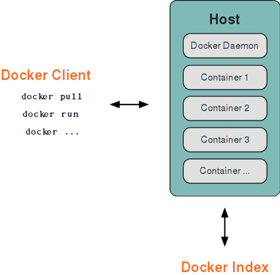

Docker 底层的核心技术包括 Linux 上的命名空间（Namespaces）、控制组（Control groups）、Union 文件系统（Union file systems）和容器格式（Container format）。
我们知道，传统的虚拟机通过在宿主主机中运行 hypervisor 来模拟一整套完整的硬件环境提供给虚拟机的操作系统。虚拟机系统看到的环境是可限制的，也是彼此隔离的。
这种直接的做法实现了对资源最完整的封装，但很多时候往往意味着系统资源的浪费。
例如，以宿主机和虚拟机系统都为 Linux 系统为例，虚拟机中运行的应用其实可以利用宿主机系统中的运行环境。
我们知道，在操作系统中，包括内核、文件系统、网络、PID、UID、IPC、内存、硬盘、CPU 等等，所有的资源都是应用进程直接共享的。
要想实现虚拟化，除了要实现对内存、CPU、网络IO、硬盘IO、存储空间等的限制外，还要实现文件系统、网络、PID、UID、IPC等等的相互隔离。
前者相对容易实现一些，后者则需要宿主机系统的深入支持。
随着 Linux 系统对于命名空间功能的完善实现，程序员已经可以实现上面的所有需求，让某些进程在彼此隔离的命名空间中运行。大家虽然都共用一个内核和某些运行时环境（例如一些系统命令和系统库），但是彼此却看不到，都以为系统中只有自己的存在。这种机制就是容器（Container），利用命名空间来做权限的隔离控制，利用 cgroups 来做资源分配。
Docker 采用了 C/S 架构，包括客户端和服务端。Docker 守护进程 （Daemon）作为服务端接受来自客户端的请求，并处理这些请求（创建、运行、分发容器）。
客户端和服务端既可以运行在一个机器上，也可通过 socket 或者 RESTful API 来进行通信。

Docker 守护进程一般在宿主主机后台运行，等待接收来自客户端的消息。
Docker 客户端则为用户提供一系列可执行命令，用户用这些命令实现跟 Docker 守护进程交互。
命名空间是 Linux 内核一个强大的特性。每个容器都有自己单独的命名空间，运行在其中的应用都像是在独立的操作系统中运行一样。命名空间保证了容器之间彼此互不影响。
不同用户的进程就是通过 pid 命名空间隔离开的，且不同命名空间中可以有相同 pid。所有的 LXC 进程在 Docker 中的父进程为 Docker 进程，每个 LXC 进程具有不同的命名空间。同时由于允许嵌套，因此可以很方便的实现嵌套的 Docker 容器。
有了 pid 命名空间，每个命名空间中的 pid 能够相互隔离，但是网络端口还是共享 host 的端口。网络隔离是通过 net 命名空间实现的， 每个 net 命名空间有独立的 网络设备，IP 地址，路由表，/proc/net 目录。这样每个容器的网络就能隔离开来。Docker 默认采用 veth 的方式，将容器中的虚拟网卡同 host 上的一 个Docker 网桥 docker0 连接在一起。
容器中进程交互还是采用了 Linux 常见的进程间交互方法(interprocess communication - IPC)， 包括信号量、消息队列和共享内存等。然而同 VM 不同的是，容器的进程间交互实际上还是 host 上具有相同 pid 命名空间中的进程间交互，因此需要在 IPC 资源申请时加入命名空间信息，每个 IPC 资源有一个唯一的 32 位 id。
类似 chroot，将一个进程放到一个特定的目录执行。mnt 命名空间允许不同命名空间的进程看到的文件结构不同，这样每个命名空间 中的进程所看到的文件目录就被隔离开了。同 chroot 不同，每个命名空间中的容器在 /proc/mounts 的信息只包含所在命名空间的 mount point。
UTS("UNIX Time-sharing System") 命名空间允许每个容器拥有独立的 hostname 和 domain name， 使其在网络上可以被视作一个独立的节点而非 主机上的一个进程。
每个容器可以有不同的用户和组 id， 也就是说可以在容器内用容器内部的用户执行程序而非主机上的用户。
*注：更多关于 Linux 上命名空间的信息，请阅读 这篇文章。
控制组（cgroups）是 Linux 内核的一个特性，主要用来对共享资源进行隔离、限制、审计等。只有能控制分配到容器的资源，才能避免当多个容器同时运行时的对系统资源的竞争。
控制组技术最早是由 Google 的程序员在 2006 年提出，Linux 内核自 2.6.24 开始支持。
控制组可以提供对容器的内存、CPU、磁盘 IO 等资源的限制和审计管理。
联合文件系统（UnionFS）是一种分层、轻量级并且高性能的文件系统，它支持对文件系统的修改作为一次提交来一层层的叠加，同时可以将不同目录挂载到同一个虚拟文件系统下(unite several directories into a single virtual filesystem)。
联合文件系统是 Docker 镜像的基础。镜像可以通过分层来进行继承，基于基础镜像（没有父镜像），可以制作各种具体的应用镜像。
另外，不同 Docker 容器就可以共享一些基础的文件系统层，同时再加上自己独有的改动层，大大提高了存储的效率。
Docker 中使用的 AUFS（Advanced Multi-Layered Unification Filesystem）就是一种联合文件系统。 AUFS 支持为每一个成员目录（类似 Git 的分支）设定只读（readonly）、读写（readwrite）和写出（whiteout-able）权限, 同时 AUFS 里有一个类似分层的概念, 对只读权限的分支可以逻辑上进行增量地修改(不影响只读部分的)。
Docker 目前支持的联合文件系统包括 OverlayFS, AUFS, Btrfs, VFS, ZFS 和 Device Mapper。
各 Linux 发行版 Docker 推荐使用的存储驱动如下表。
| Linux 发行版 | Docker 推荐使用的存储驱动 |
|---|---|
| Docker on Ubuntu | overlay2 (16.04 +) |
| Docker on Debian | overlay2 (Debian Stretch), aufs, devicemapper |
| Docker on CentOS | overlay2 |
| Docker on Fedora | overlay2 |
在可能的情况下，推荐 使用 overlay2 存储驱动，overlay2 是目前 Docker 默认的存储驱动，以前则是 aufs。你可以通过配置来使用以上提到的其他类型的存储驱动。
最初，Docker 采用了 LXC 中的容器格式。从 0.7 版本以后开始去除 LXC，转而使用自行开发的 libcontainer，从 1.11 开始，则进一步演进为使用 runC 和 containerd。
Docker 的网络实现其实就是利用了 Linux 上的网络命名空间和虚拟网络设备（特别是 veth pair）。建议先熟悉了解这两部分的基本概念再阅读本章。
首先，要实现网络通信，机器需要至少一个网络接口（物理接口或虚拟接口）来收发数据包；此外，如果不同子网之间要进行通信，需要路由机制。
Docker 中的网络接口默认都是虚拟的接口。虚拟接口的优势之一是转发效率较高。
Linux 通过在内核中进行数据复制来实现虚拟接口之间的数据转发，发送接口的发送缓存中的数据包被直接复制到接收接口的接收缓存中。对于本地系统和容器内系统看来就像是一个正常的以太网卡，只是它不需要真正同外部网络设备通信，速度要快很多。
Docker 容器网络就利用了这项技术。它在本地主机和容器内分别创建一个虚拟接口，并让它们彼此连通（这样的一对接口叫做 veth pair）。
Docker 创建一个容器的时候，会执行如下操作：
完成这些之后，容器就可以使用 eth0 虚拟网卡来连接其他容器和其他网络。
可以在 docker run 的时候通过 --net 参数来指定容器的网络配置，有4个可选值：
--net=bridge 这个是默认值，连接到默认的网桥。--net=host 告诉 Docker 不要将容器网络放到隔离的命名空间中，即不要容器化容器内的网络。此时容器使用本地主机的网络，它拥有完全的本地主机接口访问权限。容器进程可以跟主机其它 root 进程一样可以打开低范围的端口，可以访问本地网络服务比如 D-bus，还可以让容器做一些影响整个主机系统的事情，比如重启主机。因此使用这个选项的时候要非常小心。如果进一步的使用 --privileged=true，容器会被允许直接配置主机的网络堆栈。--net=container:NAME_or_ID 让 Docker 将新建容器的进程放到一个已存在容器的网络栈中，新容器进程有自己的文件系统、进程列表和资源限制，但会和已存在的容器共享 IP 地址和端口等网络资源，两者进程可以直接通过 lo 环回接口通信。--net=none 让 Docker 将新容器放到隔离的网络栈中，但是不进行网络配置。之后，用户可以自己进行配置。用户使用 --net=none 后，可以自行配置网络，让容器达到跟平常一样具有访问网络的权限。通过这个过程，可以了解 Docker 配置网络的细节。
首先，启动一个 /bin/bash 容器，指定 --net=none 参数。
$ docker run -i -t --rm --net=none base /bin/bash
root@63f36fc01b5f:/#在本地主机查找容器的进程 id，并为它创建网络命名空间。
$ docker inspect -f '{{.State.Pid}}' 63f36fc01b5f
2778
$ pid=2778
$ sudo mkdir -p /var/run/netns
$ sudo ln -s /proc/$pid/ns/net /var/run/netns/$pid检查桥接网卡的 IP 和子网掩码信息。
$ ip addr show docker0
21: docker0: ...
inet 172.17.42.1/16 scope global docker0
...创建一对 “veth pair” 接口 A 和 B，绑定 A 到网桥 docker0，并启用它
$ sudo ip link add A type veth peer name B
$ sudo brctl addif docker0 A
$ sudo ip link set A up将B放到容器的网络命名空间，命名为 eth0，启动它并配置一个可用 IP（桥接网段）和默认网关。
$ sudo ip link set B netns $pid
$ sudo ip netns exec $pid ip link set dev B name eth0
$ sudo ip netns exec $pid ip link set eth0 up
$ sudo ip netns exec $pid ip addr add 172.17.42.99/16 dev eth0
$ sudo ip netns exec $pid ip route add default via 172.17.42.1以上，就是 Docker 配置网络的具体过程。
当容器结束后，Docker 会清空容器，容器内的 eth0 会随网络命名空间一起被清除，A 接口也被自动从 docker0 卸载。
此外，用户可以使用 ip netns exec 命令来在指定网络命名空间中进行配置，从而配置容器内的网络。
[1] 这篇文章: https://blog.scottlowe.org/2013/09/04/introducing-linux-network-namespaces/[2] cgroups: https://en.wikipedia.org/wiki/Cgroups[3] UnionFS: https://en.wikipedia.org/wiki/UnionFS[4] 推荐: https://docs.docker.com/storage/storagedriver/select-storage-driver/[5] libcontainer: https://github.com/docker/libcontainer[6] runC: https://github.com/opencontainers/runc[7] containerd: https://github.com/containerd/containerd